{{Cizmărie · Bd. Regele Mihai I nr. 22, Iași|Cobbler · Bd. Regele Mihai I no. 22, Iași|Sapateiro · Bd. Regele Mihai I n.º 22, Iași}}
GEANGE{{Reparații încălțăminte|Shoe repair|Reparação de calçado}}
{{în meserie din 1987|in the trade since 1987|no ofício desde 1987}}
{{Tălpi, tocuri, fermoare, cusături — ca pantofii la care țineți să mai meargă câțiva ani. Și, la același ghișeu: marochinărie, croitorie și vopsit haine de piele.|Soles, heels, zips, stitching — so the shoes you love can walk a few more years. And at the same counter: leather goods, tailoring and leather-jacket dyeing.|Solas, saltos, fechos, costuras — para os sapatos de que gosta andarem mais uns anos. E no mesmo balcão: marroquinaria, costura e tingimento de roupa de pele.}}
{{Ce reparăm|What we fix|O que reparamos}}
{{Lucrul de mână, de aproape|Handwork, up close|Trabalho à mão, de perto}}
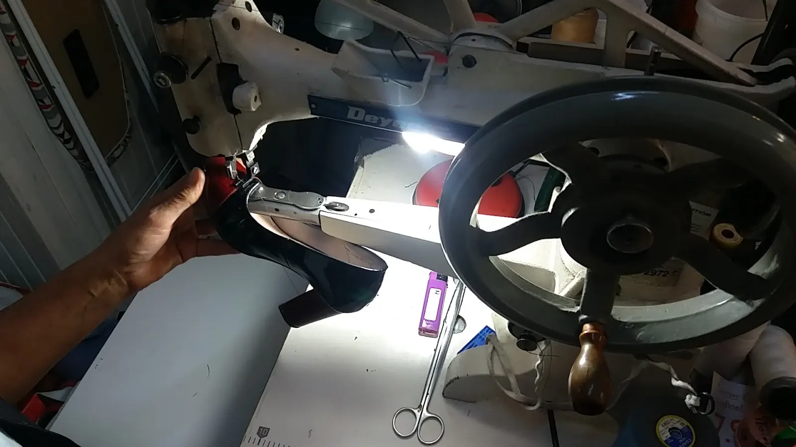
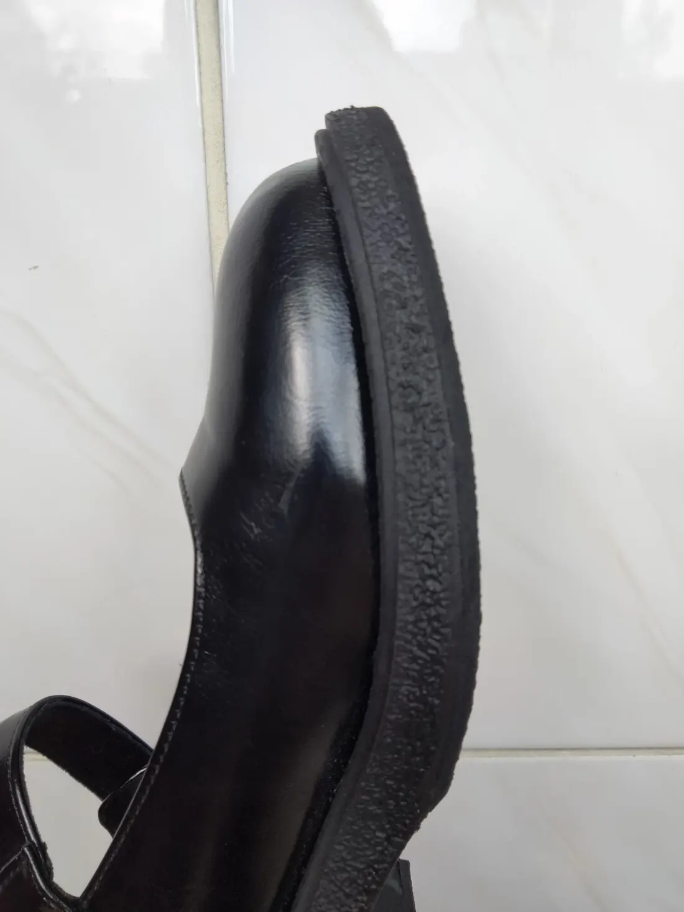
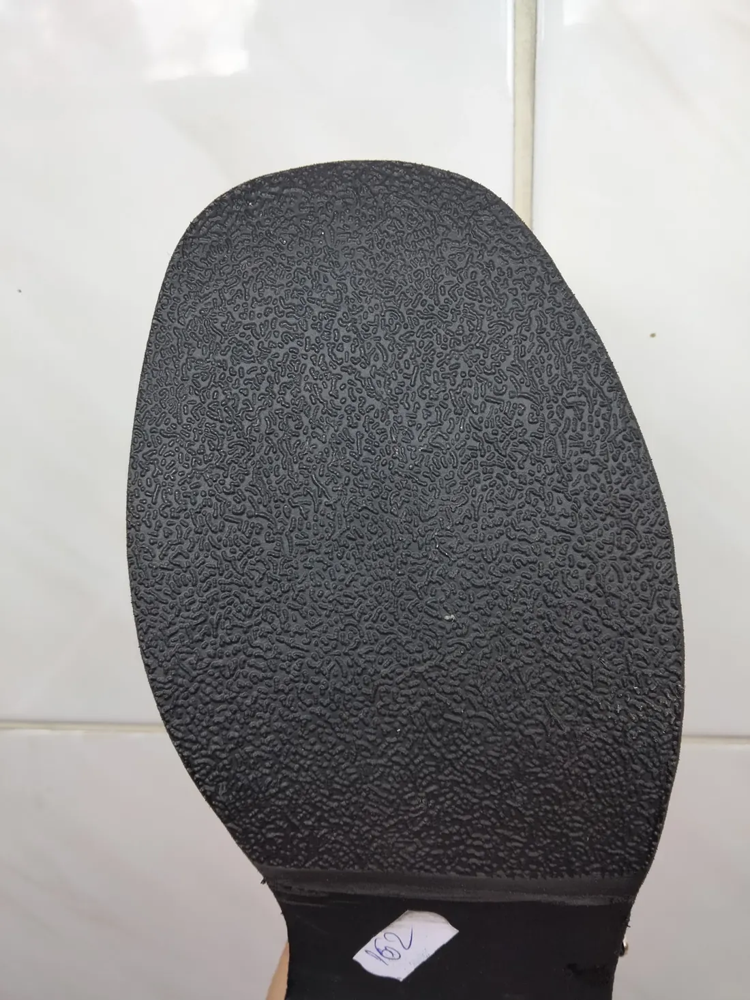
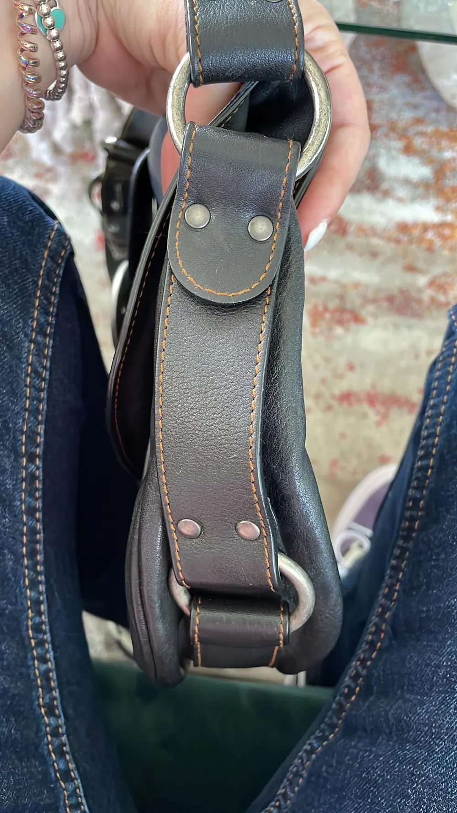
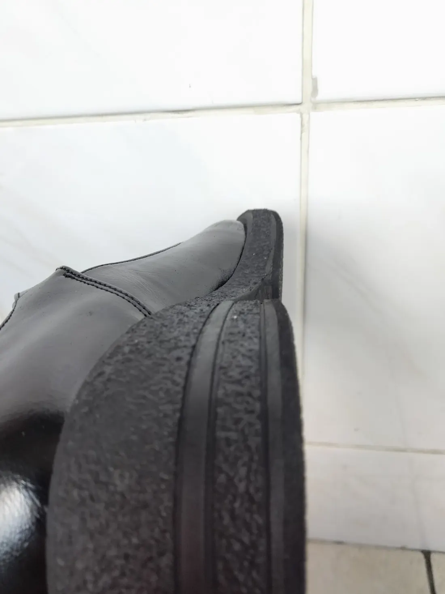
- {{Nu se vede pe unde s-a lucrat|You can’t see where it was worked|Não se vê onde se mexeu}}{{După o micșorare de talpă, un client a remarcat că textura a fost potrivită cu marginea, iar îmbinarea nu se observă.|After a sole reduction, a customer noted the texture was matched to the edge and the join can’t be seen.|Depois de reduzir uma sola, um cliente notou que a textura foi acertada com o rebordo e a junção não se vê.}}
- {{Capse ca originalele|Rivets like the originals|Rebites como os originais}}{{La o geantă de lux, capsele schimbate arată aproape identic cu cele de fabrică — iar prețul a fost mic.|On a luxury bag, the replaced rivets look almost identical to the factory ones — and the price was low.|Numa mala de luxo, os rebites trocados ficaram quase iguais aos de fábrica — e o preço foi baixo.}}
- {{Pantofii la care țineți|The shoes you’re attached to|Os sapatos de que gosta}}{{O clientă scrie că, în loc să renunțe la o pereche dragă, a adus-o aici la reparat.|A customer writes that instead of giving up a beloved pair, she brought it here to be fixed.|Uma cliente conta que, em vez de desistir de um par querido, o trouxe cá para arranjar.}}
{{Aduceți perechea la ghișeu|Bring the pair to the counter|Traga o par ao balcão}}
- {{Adresa|Address|Morada}}
- Bd. Regele Mihai I al României nr. 22, 700555 Iași
- {{Reper|Landmark|Referência}}
- {{în aceeași clădire cu Brutăria Artizanală Coșul cu pâini|in the same building as the Coșul cu pâini artisan bakery|no mesmo edifício da padaria artesanal Coșul cu pâini}}
- {{Telefon|Phone|Telefone}}
- 0726 234 167
- {{Program|Hours|Horário}}
- {{Deschide la 09:00. Restul programului: de confirmat|Opens at 09:00. Rest of the hours: to be confirmed|Abre às 09:00. Resto do horário: a confirmar}}
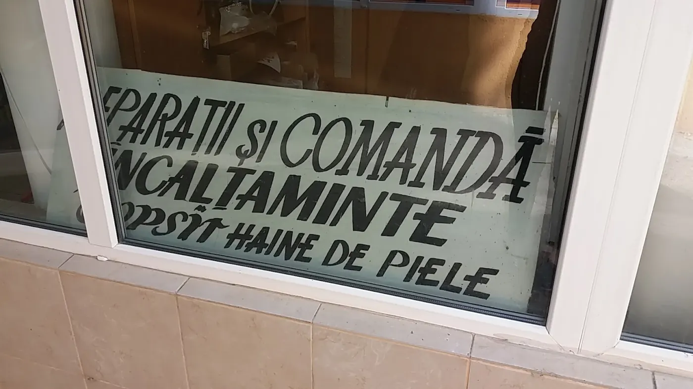
{{Reparații încălțăminte
marochinărie · croitorie|Shoe repair
leather goods · tailoring|Reparação de calçado
marroquinaria · costura}}
{{Exact ce scrie pe panoul de la intrare. Prețul se spune după ce se vede perechea — aduceți-o sau trimiteți o poză.|Exactly what the sign at the entrance says. The price is given once the pair is seen — bring it in or send a photo.|Exatamente o que diz a placa à entrada. O preço dá-se depois de ver o par — traga-o ou mande uma foto.}}
{{Bon de reparație|Repair ticket|Talão de reparação}}
{{Alegeți ce aduceți și ce are. Bonul se completează alături, iar mesajul pleacă pe WhatsApp sau prin SMS. Atingeți direct pe pantof unde e problema.|Choose what you’re bringing and what’s wrong. The ticket fills in alongside, and the message goes by WhatsApp or SMS. Tap right on the shoe where the problem is.|Escolha o que traz e o que tem. O talão preenche-se ao lado e a mensagem segue por WhatsApp ou SMS. Toque no sapato onde está o problema.}}
{{O meserie
de la 1987 încoace|A trade
since 1987|Um ofício
desde 1987}}
{{Repararea încălțămintei, din 1987|Mending shoes, since 1987|A reparar calçado, desde 1987}}
{{Atelierul lucrează în reparații de încălțăminte din 1987, iar mulțumirea clientului rămâne măsura după care se judecă orice pereche ieșită de aici.|The workshop has been repairing shoes since 1987, and the customer’s satisfaction is still the measure every pair leaving here is judged by.|A oficina repara calçado desde 1987, e a satisfação do cliente continua a ser a medida de cada par que sai daqui.}}
{{Pe lângă pantofi: genți și curele (marochinărie), croitorie și vopsit haine de piele — scrise de mână pe panoul roșu de la intrare.|Besides shoes: bags and belts (leather goods), tailoring and leather-garment dyeing — hand-lettered on the red sign at the entrance.|Além de sapatos: malas e cintos (marroquinaria), costura e tingimento de roupa de pele — pintados à mão na placa vermelha da entrada.}}
{{Cine lucrează la ghișeu și de câte generații: de confirmat|Who works the counter, and for how many generations: to be confirmed|Quem está ao balcão, e há quantas gerações: a confirmar}}
{{La ghișeu și la mașină|At the counter and the machine|Ao balcão e à máquina}}
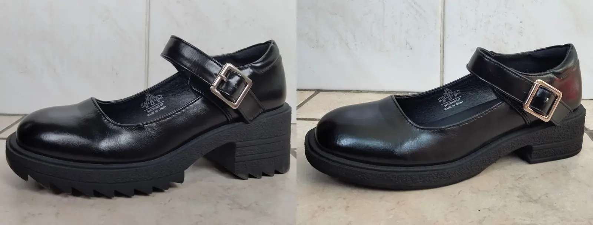
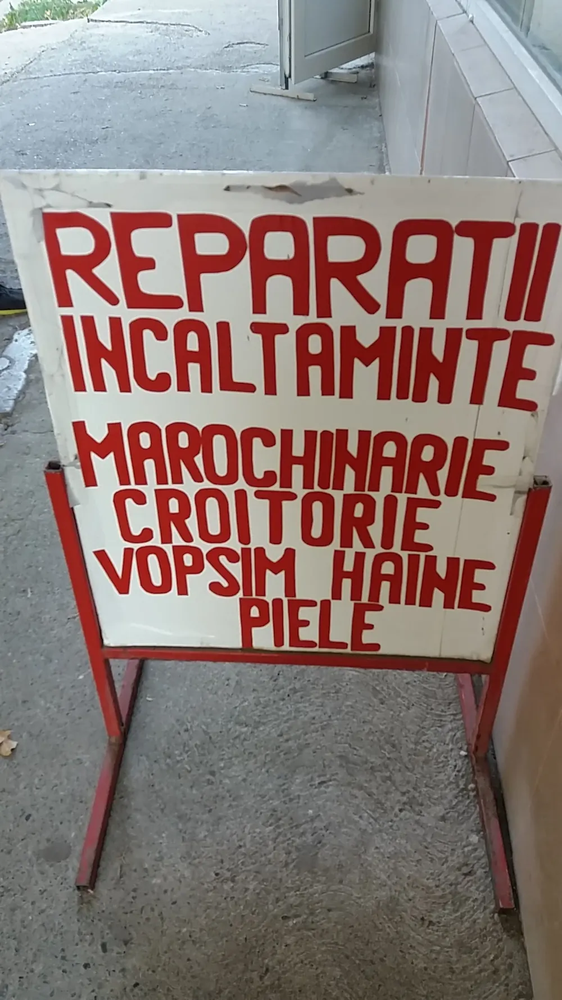
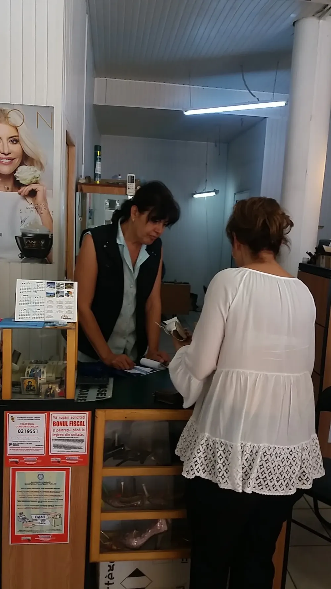
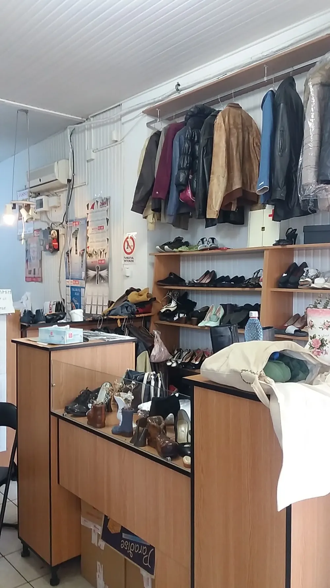
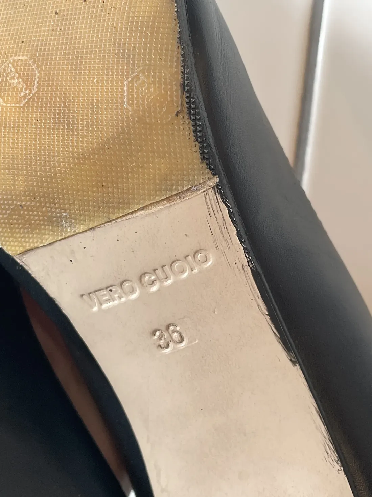
Bd. Regele Mihai I
nr. 22
{{În aceeași clădire cu Brutăria Artizanală Coșul cu pâini, aproape de Bahlui și de Bd. Profesor Dimitrie Mangeron. Atelierul are geam spre galerie, cu inscripțiile roșii.|In the same building as the Coșul cu pâini artisan bakery, near the Bahlui and Bd. Profesor Dimitrie Mangeron. The workshop has a window onto the arcade, with the red lettering.|No mesmo edifício da padaria artesanal Coșul cu pâini, perto do Bahlui e do Bd. Profesor Dimitrie Mangeron. A oficina tem montra para a galeria, com as letras vermelhas.}}
{{Program|Opening hours|Horário}}
{{Sunați înainte dacă veniți de departe — programul complet e încă de confirmat.|Call ahead if you’re coming from far — full hours are still to be confirmed.|Ligue antes se vem de longe — o horário completo está ainda a confirmar.}}
- 0726 234 167
- Bd. Regele Mihai I al României nr. 22, 700555 Iași
- {{Reper: Brutăria Artizanală Coșul cu pâini|Landmark: Coșul cu pâini artisan bakery|Referência: padaria artesanal Coșul cu pâini}}
- {{Intrare accesibilă cu scaun cu rotile|Wheelchair-accessible entrance|Entrada acessível em cadeira de rodas}}
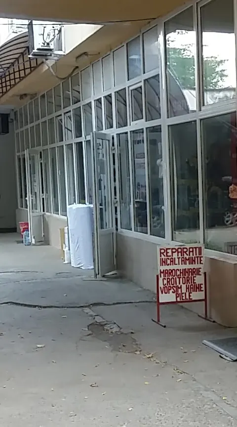
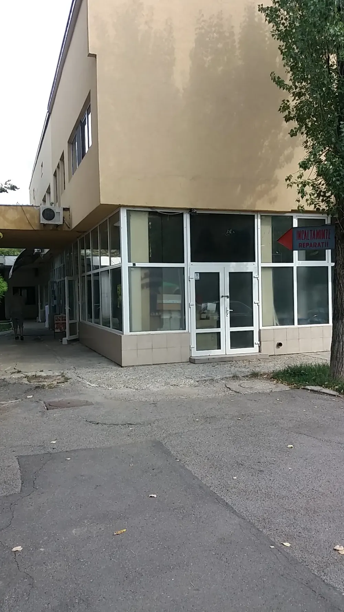
{{Deschide în Google Maps|Open in Google Maps|Abrir no Google Maps}}